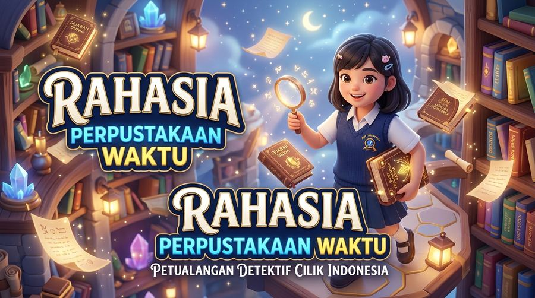
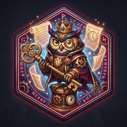

PETUALANGAN DETEKTIF KOSAKATA
“Temukan Kata, Pecahkan Makna, Taklukkan Tantangan!”
Materi: Mengeksplorasi Kosakata dalam Teks Cerita (Semester 1)
Siapa Detektif Hari Ini?
Lengkapi identitas penyelidikanmu dan pilih mitra avatar detektif.
Cara Menjadi Detektif Kosakata
Kuasai aturan permainan dan kumpulkan XP tertinggi!
Baca teks dengan teliti pada setiap lokasi penyelidikan.
Temukan kata-kata penting yang menjadi kunci rahasia cerita.
Gunakan petunjuk konteks kalimat untuk mendeteksi makna kata.
Pilih jawaban dengan cermat agar tidak terkecoh jebakan.
Jelaskan alasan dan buat kalimat orisinal karyamu.
Selesaikan 5 Level dari Desa Berburu hingga Benteng Boss Final.
Kumpulkan XP dan 5 Lencana Kehormatan untuk jadi Master Detektif.
💰 Sistem Perolehan XP:
- Jawaban Tepat +10 XP
- Menyelesaikan Level +20 XP
- Bonus Boss Final +50 XP
Peta Petualangan Detektif
Pilih lokasi yang terbuka untuk melanjutkan misi penyelidikan.
Desa Berburu Kata
Misi: Temukan 5 kosakata penting dari teks cerita.
+50 XP & Badge Mata ElangLabirin Makna
Misi: Uji makna konteks 5 kata target.
+50 XP & Badge Pemburu MaknaGerbang Kosakata
Misi: Sortir kata umum, khusus, & konotatif.
+40 XP & Badge Ahli KonteksBengkel Kalimat
Misi: Rangkai 3 kalimat logis & kontekstual.
+40 XP & Badge Perakit KalimatBenteng Boss Final
Misi: Taklukkan 10 soal Master Kosakata!
+100 XP & Badge Master DetektifRahasia Ruang Sunyi Perpustakaan
Klik atau sentuh kata-kata bernuansa tebal di dalam teks untuk mengumpulkannya ke Buku Jurnal!
Di sudut timur SMP Bintang Kejora, terdapat sebuah ruangan tua yang jarang dikunjungi siswa. Pagi itu, Rian memberanikan diri untuk menjelajah ke dalam ruangan tersebut. Suasana di dalam begitu sunyi, hanya terdengar derit langkah kakinya di atas lantai kayu jati yang berdebu. Sinar matahari pagi menembus celah jendela kaca patri, menyoroti rak-rak buku tua yang berderet tinggi hingga menyentuh langit-langit.
Dengan rasa antusias yang membara di dalam dada, Rian mulai menelusuri lorong demi lorong rak sastra klasik. Tiba-tiba, matanya tertumbuk pada sebuah buku tebal bersampul beludru biru tua dengan ukiran emas. Ia terpukau menatap keindahan ilustrasi di halaman pembukanya, membayangkan kisah-kisah petualangan pahlawan nusantara yang tersimpan rapi.
📖 Buku Catatan Detektif (Terkumpul: 0 / 5 Kata)
+0 XPPecahkan Makna Berdasarkan Konteks
Gunakan kata-kata di sekitar kata target untuk menyimpulkan arti yang tepat!
"Rian memberanikan diri untuk menjelajah ke dalam ruangan tersebut."
Apa makna kata menjelajah berdasarkan konteks kalimat di atas?
HEBAT! Detektif Berhasil!
Penjelasan makna kontekstual...
Pilah Kata ke Tiga Gerbang
Sentuh salah satu kartu kata, lalu pilih Gerbang yang sesuai dengan jenisnya!
Kartu Kata yang Perlu Diselidiki: (8 tersisa)
Kata Umum
Cakupan makna luas & menaungi kata lain.
Kata Khusus
Cakupan sempit, bagian spesifik dari kata umum.
Makna Konotatif
Memiliki makna kias/tambahan rasa, bukan harfiah.
KATEGORISASI BERHASIL!
Kamu telah memahami perbedaan kata umum, kata khusus, dan konotasi.
Rakit Kalimat Detektif Orisinal
Buktikan kepiawaianmu! Pilih 3 kosakata dan rangkai menjadi kalimat yang padu & gramatikal.
📋 Kriteria Penilaian Detektif (Skor 4 Sempurna):

Teks Soal Boss Final...
LUAR BIASA!
Pembahasan soal...
Hasil Investigasi Detektif
SERTIFIKAT DETEKTIF KOSAKATA
Detektif Unggul
Kelas IX-A • Tim Rajawali
🎖️ Koleksi 5 Lencana Kehormatan
Mata Elang Kata
Menemukan 5 kosakata cerita
Pemburu Makna
Mendeduksi konteks kalimat
Ahli Konteks
Menyortir 3 gerbang kata
Perakit Kalimat
Menyusun kalimat orisinal
Master Detektif
Taklukkan 10 tantangan Boss
Refleksi Sang Detektif
Renungkan apa yang telah kamu pelajari selama mengeksplorasi kosakata cerita.
🏆 Papan Peringkat Detektif
Peringkat detektif dengan XP tertinggi yang tersimpan di perangkat ini (cocok dipakai bergiliran satu laptop/tablet di kelas).